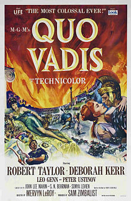
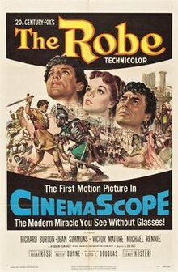
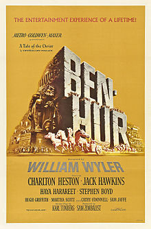
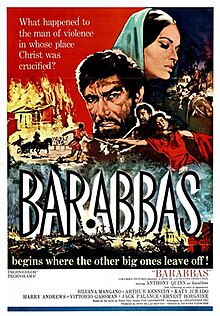

Course: Jesus in the Movies
Lecture #2: The Alternative Approaches
THE ALTERNATIVE APPROACHES -- QUO VADIS, THE ROBE, BEN HUR, & BARABBAS
Introduction: After WWII, with the emerging rivalry of TV and advances in technology, cinema turned in earnest to the Bible as a thematic basis for displaying itself in grandiose and overpowering ways.
DeMille made Samson and Delilah (1949) and remade his 1923 Ten Commandments (1956) but never remade King of Kings. That was for Samuel Bronston to do in 1961, 2 years after DeMille's death.
Filmmakers were discouraged from bringing the Jesus Story to the screen by several factors. In the early 1930's there emerged a system whereby the industry regulated itself under watch of, and in cooperation with, an external pressure group.
As already pointed out the MPPDA set up guidelines when Hayes was head in 1927. In 1934 the Catholic bishops in this country established the LEGION OF DECENCY which was formed to make sure that the film industry enforced the production code. They even set up a rating system for films.
For the next thirty years, the MPPDA and the LEGION OF DECENCY controlled, formally and informally, what viewers would see on the screens of American motion picture theatres, including cinematic portrayals of Jesus.
Thus, filmmakers turned to another way of showing the Jesus story without actually focusing the camera directly on the person of Jesus. The 1950's and 60's witnessed the continuation and flowering of this alternative approach to Jesus on film: telling the Jesus story in association with, but in subordination to, another story or other stories.
There are four films we will deal with that belong cinematically to the genre called, the Roman/Christian epic. Invariably the Roman/Christian epic features protagonists wrestling with and acting out the decision to follow Jesus as the Christ, not to obey Ceasar and the demands of Rome. Of these four, Barabbas received an “A II” rating (morally unobjectionable for adults) the others all “A I” (Morally unobjectionable). Barabbas is the most challenging to the thoughtful viewer.

QUO VADIS (1951)
Quo Vadis, The Robe, and Barabbas --in varying ways-- center their stories in the city of Rome sometime after the crucifixion of Jesus, although the principal characters have been eyewitnesses to the event. Ben Hur is the exception so we will deal with it last.
This version of Quo Vadis, produced by Sam Zimbalist for MGM and directed by Mervyn LeRoy had at least 2 cinematic predecessors in the silent era (1913, 1923). All versions were adaptions of the 1895 novel of the same name by Nobel Prize winning author Henryk Sienkiewicz. A Polish director has just released his version of this book in 2001.
The 1951 version, Staring Robert Taylor and Deborah Kerr, shows the conflict between Rome and Christianity taking place during the reign of Nero (54-68 CE). The story involves the triumph of romantic love between the military hero Marcus Vinicius and a female hostage of the state named Lygia. They somehow survive Nero's persecution and after Nero's death are free to marry.
The films and the novel derive their name from the words allegedly spoken by Peter as he flees the burned city of Rome. In this film, confronted by a light in the shape of a cross, Peter asks: "Quo Vadis, Domine?" (whither goest thou, Lord). Jesus--unseen but heard--declares: "If thou desert my people, I shall go to Rome to be crucified a second time."
Peter then returns to Rome and suffers crucifixion himself (upside down according to church tradition). The Genial face of the disciple Peter will reappear as the face of the wise man Balthasar in Ben Hur. played by the actor Finlay Currie.
The principal appearance of Jesus in Quo Vadis occur midway thru the film at a gathering of believers outside Rome. Peter boldly preaches about Jesus’ call to his disciples, his teaching and miracles, and events leading to the crucifixion and resurrection. Occasionally, the camera shot of Peter dissolves into a flashback of Jesus to illustrate Peter's words. (show this section of movie)(@ 10 min)

THE ROBE (1953)
The Robe did not have the film history of Quo Vadis but was based on a book published in 1942 by Lloyd C. Douglas, a best-selling author but it made film history because it was the first movie to use CinemaScope, or widescreen filming. It was produced by Frank Ross for 20th century Fox and directed by Henry Koster.
The Robe refers to to garment worn by Jesus to the place of execution and for which the soldiers cast lots beneath the cross. It is another story about the conflict between the power of Rome and Christianity. It begins during the 18th year of the reign of Tiberius (14-37 CE) but ends during the reign of his successor Caligula (37-41 CE).
The story also centers around a love relationship between tribune Marcellus Gallio (Richard Burton) and Diana, a longtime acquaintance (Jean Simmons) who has come under the guardianship of Tiberius.
Posted to Jerusalem out of spite, Marcellus leaves for that land with his slave Demetrius (Victor Mature). It is in conjunction with Marcellus tour that we see Jesus from a distance entering the city on a donkey. Marcellus within the week is ordered by Pilate to command the execution squad. We see little of Jesus in all this, never his face and the crosses only from a distance.
Marcellus wins the robe in a game of dice. The only words we hear spoken by Jesus are "Father, forgive them" from Luke and spoken by Cameron Mitchell.
After winning the Robe, Marcellus feels bewitched and crazed by it, but his slave Demetrius is under the spell of this "Carpenter from Galilee" and deserts Marcellus with accusations about crucifying the messiah.
Marcellus long journey back to sanity and forward to faith takes him back to Italy through the intervention of Diana, then to Cana in Galilee, and finally, back to Rome where he receives a death sentence for treason from Caligula. His beloved Diane joins him, and they walk to their executions as believers with his having announced that Jesus' Kingdom is not of this world." (John 18:36)
Show clips from DVD: Crucifixion scene, back in Cana, end
On DVD show scenes: 6,7,8,
Scene 6 picks up with the slave Demetrius (Victor Mature) running around
Jerusalem trying to warn Jesus of his danger. We will take this section thru the
winning of the robe and the reaction of Marcellus. (@ 17 min)
NOTE: Highlighted section is “Additional Material – Read only if Time & Interest Permit
Now picking up with the scene before Caligula (Scene 19) To the end. Marcellus has been captured after returning to Rome and joining the Christians after his slave, Demetrius, was healed by the Robe. (@ 12 min)

BEN HUR (1959)
MGM and Sam Zimbalist, who had brought Quo Vadis to the screen 8 years earlier decided to do a remake of Ben Hur. William Wyler was chosen as director. He had received two academy awards already and in fact, had worked on the 1925 film as a much younger man. Miklos Rosza did a fantastic music score. The movie was made in Rome at Cinecitta studios for about 15 million dollars.
Ben Hur, like Quo Vadis, had dramatic predecessors. There had been two films already (1907 and 1925) and In the late 1800's a play that ran for 20 years. The 1925 movie was 4 million to make and a classic in its own right.
General Lew Wallace, at one time territorial governor of NM, was, of course the author of Ben Hur: a tale of the Christ. The tale is told within the framework of the life of Jesus. The tale actually begins in 26 AD with Roman soldiers marching thru Nazareth, before Jesus begins his ministry.
That Jesus has begun his public ministry receives notice when Messala and his fellow soldiers arrive in Jerusalem. Messala's predecessor speaks of a "carpenter's son" who does "magical tricks" and teaches "God is near...”
There are 2 encounters of Judah Ben Hur with Jesus both involving the giving of water: The first one when Judah is being taken as a prisoner to serve on the roman galleys
The second encounter occurs while Jesus is being taken for crucifixion. Judah has returned to Judea and defeated and killed Messala in the chariot race. He has been reunited with Esther, a long-time love interest, and his mother and sister who had become lepers while in prison. Judah recognizes Jesus as the man who gave him water many years earlier. We never see his face in this movie either.
Show the last few scenes beginning with the condemnation of Jesus to the end. (@ 18 minutes --scenes 57-61 (scene 58: giving water)

BARABBAS (1961/62)
This film by Dino De Laurentiis was filmed in Italy with Richard Fleisher as director and released thru Colombia pictures.
Based on the 1951 novel by the Nobel prize winning Swedish author Par Lagerkvist, the story is about the character named Barabbas who was released instead of Jesus by Pilate (Found only in Luke). Anthony Quinn plays the title role.
The story carries Barabbas from Jerusalem--where he witnesses events related to the crucifixion--thru a long sentence of forced labor in the sulfur mines of Sicily for having resumed his rebellious ways against Rome, to his final years in Rome where he has earned his freedom as a gladiator.
Along the way, Barabbas becomes a Christian, of a sort. Having misunderstood the statement that God would burn away the old world to make way for the new, he actually participates in the burning of Rome, thinking that he is doing the Christian thing.
Jesus, played by Roy Mangano, appears on screen in the very beginning of the film which opens with Jesus on trial before Pontius Pilate for "sedition" and "blasphemy". We see him only in shadow and though we see the scourging and mocking the camera avoids showing his face.
Barabbas upon his release, sees Jesus briefly--standing in the blinding light of day with a red robe and crown of thorns. Later, as Barabbas celebrates his release, he sees Jesus struggling with his cross. Barabbas visits the scene of crucifixion as Jesus has his body removed--but again the camera moves around the periphery of the Jesus figure.
The CRUCIFIXION sequence has a distinction that sets it apart from all other Jesus films. There is neither storm nor earthquake nor tearing of the temple veil. There is just an eerie darkness as the dimmed sun hangs in the sky at midday over the cross of Jesus (synoptics)
The crowds stand around in stunned silence. De Laurentiis reported that the camera here has captured an actual solar eclipse visible in the Italian village of Roccastrada, a hundred or so miles north of Rome on February 15, 1962.
There is a love connection between Barabbas and a woman named Rachel who believes Jesus was resurrected. Barabbas believes Jesus body was stolen. This claim by Barabbas has its basis in the gospels themselves in Matt. 28: 11-15 and was accepted as historical by the 18th century German scholar, Hermann Reimarus. He, in fact, is credited with beginning the first quest for the historical Jesus.
He argued that Jesus was a political messiah whose intention was to establish a political kingdom in Jerusalem but who failed to achieve that goal. Subsequently, Jesus Disciples stole his body and made up the notion of Jesus as a "spiritual messiah" who went to Jerusalem to die for the sins of humankind, who was raised from the dead by God, and would come again for final judgement.. According to Reimarus, therefore, Christianity originated as a conscious fraud perpetrated by Jesus followers. Rachel pays for her belief in Jesus’ literal resurrection by being stoned in Jerusalem.
Peter, as in most these films, is an important character who enters into dialogue with Barabbas twice. First, after the crucifixion and much later after the burning of Rome (about 64 CE).
Barabbas, throughout the film, is haunted by the memory of the one who died in his place. More than once he cries "Why can't God make himself plain?" This seems to address modern humans, especially when Peter puts forth the argument that the wrestling about the God question in the human soul in itself represents knowledge of God.
Finally, Barabbas does die as a Christian on a cross amidst a forest of crosses under Nero.
First, the opening scenes which run about 25 minutes which include thru the resurrection.
Start from beginning 01 thru 06 (a promise kept) @ 25 minutes
See where we are on time before doing these last scenes.
Here are the final scenes with Barabbas mistakenly trying to help burn Rome to the end. (scene 26 thru 28) @ 10 min. // Total ~ 35 min.
LECTURE #2: (CONT.) THE PORTRAYELS OF JESUS IN THESE MOVIES
Roman/Christian epics must by their very nature be very selective in what they Present about Jesus and his activity. Each of these four films we have considered here centers around one moment of his life--his final one, i.e., his death. These films also highlight Jesus' teaching on forgiveness and love. therefore, the view is that of a non-violent, crucified redeemer.
Quo Vadis in the opening narration speaks of the miracle that happened on a Roman cross 30 before. When Peter preaches, he emphasizes this. It represents a tale of martyrdom. Jesus Death clearly involves deliverance from death and life everlasting.
The Robe and Barabbas are also tales of martyrdom. Marcellus and Barabbas after having to deal with their own psychological problems concerning Jesus’ death, go to a state imposed death bearing the label "Christian".
Marcellus understands redemption in terms of forgiveness and eternal life. As he speaks of in the last scene of a kingdom not of this world. Barabbas, however, expresses a certain agnosticism about life and about God right up to the end. For him, Death itself may be his redemption from the burden of life.
Unlike the others we have discussed, Ben Hur is not a tale of martyrdom. Jesus is still the non-violent crucified redeemer. In fact, redemption for Judah Ben Hur involves his transformation from one who vengefully wields the sword to one committed to the way of love. The only words from the Cross are "Father Forgive them...."
In the film it is Balthasar--one of the three wise men--who functions as the principle theological commentator on the events that have transpired.
THE RESONSES: BOX OFFICE SUCCESSES
The 1950's was the decade of the Biblical epic. Both Quo Vadis and The Robe were box office blockbusters and both received academy award nominations for best picture, Richard Burton received a best actor nomination and received 3 academy awards.
Even so, there was criticism of Quo Vadis as using tasteless tableaux of Jesus during Peter's sermon, and a tasteless distraction. However, the crucifixion sequence from The Robe received praise for its reverential dignity.
Ben Hur became the greatest success among the alternative Jesus films that subordinated the Jesus story to a tale with a Roman/Christian theme. In fact, it represents one of the most successful films in the history of cinema. It gained 11 academy awards, including best picture, director, actor and supporting actor. This number was not broken until Titanic in 1998.
This does not mean there were not criticisms. Several reviewers saw it only as a super spectacle. Even Martin Marty of the Christian Century didn't like it until after actually viewing it then he decided it belonged in a category all by itself. It was the personal element that made you care about the people that made it exceptional.
The greatest praise from the two catholic periodicals, America and commonweal, were saved for BARABBAS. Both critics agreed that the movie was a rare bird in that it was genuinely religious. They agreed it was the story of the "Hound of Heaven" who prevails at the last moment.
Both From the Manger to the Cross and King of Kings had received high marks for reverence but the high marks for Ben Hur and Barabbas came because of the meaning: What's it all about?
ANTI SEMITISM:
It’s been said that if there are any antisemitic tendencies in these Roman/Christian Epics of the 50s and 60s it is in the absence of the Jews. Those stories that play out in the city of Rome: Quo Vadis, The Robe and Barabbas--there is no indication of a Jewish presence in Rome and no clue that the movement called "Christian" still struggles with its identity within Judaism.
In those films where we see Jesus' trial for his life in Jerusalem, the viewer first meets him standing before Pilate. All three of the above-mentioned films show Pilate washing his hands. Only Matt 24:27 has this incident. In these alternative films, the Jewish authorities have no stated role in the events unfolding.
Interestingly, the omission in these films of the gospel-based scene of Jesus' trial before Caiaphas (Matt. & Mark), found historical support among those scholars who claimed that Jesus’ appearance before Caiaphas was "made up" by the church in order to shift responsibility for Jesus' death from the Romans to the Jewish authorities. More recently, the historicity of Jesus' trial before Pilate also has been called into question.